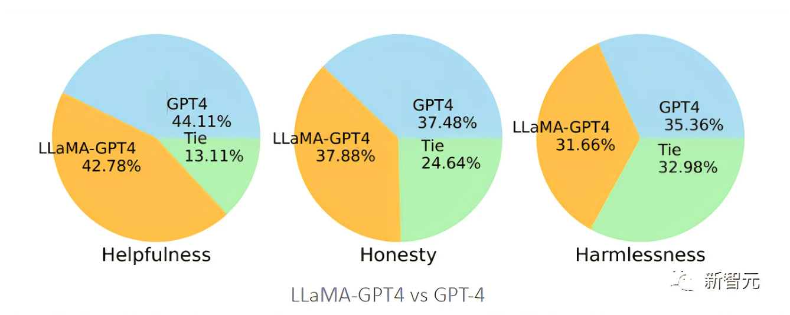
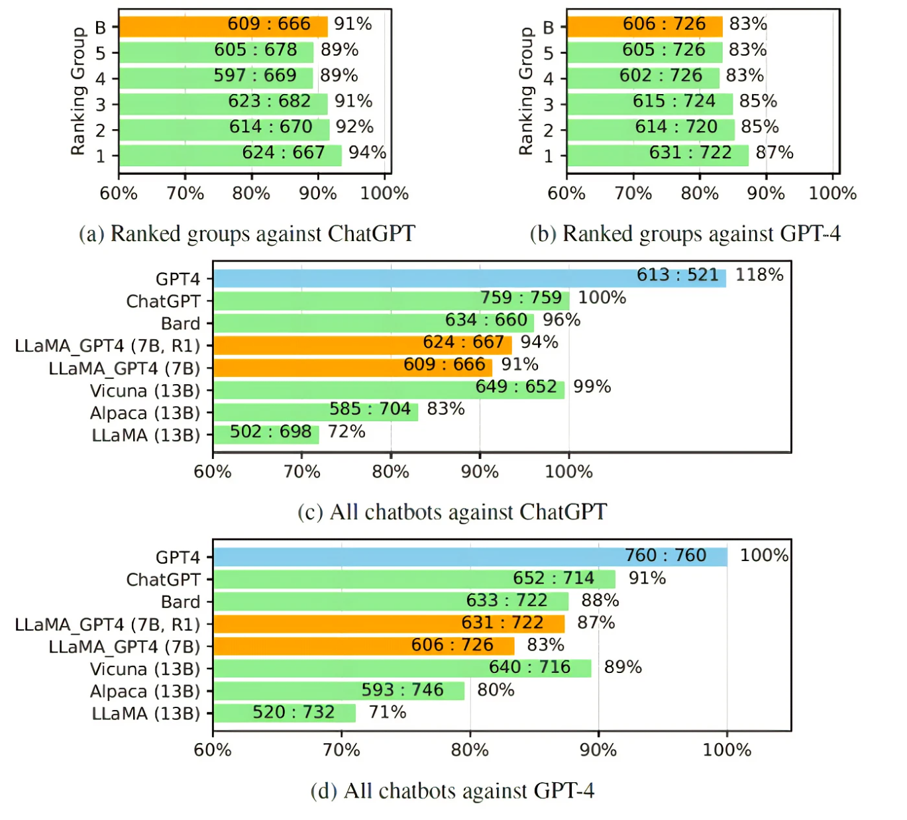

三、Self-Instruct
参考链接：
轻松打造家用版GPT-4！微软开源微调指令集：效果不输原版，中英双语都能用
微调数据链接：https://github.com/Instruction-Tuning-with-GPT-4/GPT-4-LLM
论文链接：https://arxiv.org/pdf/2304.03277.pdf
- 使用GPT-4模型来自动生成语言模型所需的微调指令数据。GPT-4生成的instruction-following数据表现出更强大的对齐性能。
- 中文Instruction-Following Data：使用ChatGPT将5.2万条指令翻译成中文，并要求GPT-4用中文回答这些指令，并以此建立一个基于LLaMA的中文instruction-following模型，并研究指令调优的跨语言泛化能力。
- 对比数据（Comparison Data）：要求GPT-4对自己的回复提供从1到10的评分，并对GPT-4, GPT-3.5和OPT-IML这三个模型的回复进行评分，以训练奖励模型。
- 研究人员基于LLaMA 7B checkpoint有监督微调后训练得到了两个模型：LLaMA-GPT4是在GPT-4生成的5.2万条英文instruction-following数据上训练的；LLaMA-GPT4-CN是在GPT-4的5.2万条中文instruction-following数据上训练的。
- 奖励模型：研究人员使用GPT-4创建了对比数据；为了评估数据质量，研究人员训练一个基于OPT 1.3B的奖励模型，以对不同的回复进行评分：对一个提示和K个回复，GPT-4为每个回复提供一个1到10之间的评分。
- 效果评估：人类评估3H标准。基于HHH对齐标准，研究人员使用众包平台Amazon Mechanical Turk对模型生成结果进行人工评估。
帮助性（helpfulness）：是否能帮助人类实现他们的目标，一个能够准确回答问题的模型是有帮助的。
诚实性（honesty）：是否提供真实信息，并在必要时表达其不确定性以避免误导人类用户，一个提供虚假信息的模型是不诚实的。
无害性（harmlessness）：是否不会对人类造成伤害，一个产生仇恨言论或提倡暴力的模型不是无害的。

GPT-4自动评估：受 Vicuna 的启发，研究人员也选择用GPT-4来评估不同聊天机器人模型对80个未见过的问题所生成回答的质量，从 LLaMA-GPT-4(7B)和 GPT-4模型中收集回复，并从以前的研究中获得其他模型的答案，然后要求GPT-4对两个模型之间的回复质量进行评分，评分范围从1到10，并将结果与其他强竞争模型(ChatGPT 和 GPT-4)进行比较。
结果显示：反馈数据和奖励模型对提高 LLaMA 的性能是有效的；用GPT-4对LLaMA进行指令调优，往往比用text-davinci-003调优（即Alpaca）和不调优（即LLaMA）的性能更高；7B LLaMA GPT4的性能超过了13B Alpaca和LLaMA，但和GPT-4等大型商业聊天机器人相比，仍有差距。

非自然指令评估（Unnatural Instruction Evaluation）：从平均ROUGE-L得分来看，Alpaca优于LLaMA-GPT 4和GPT-4，可以注意到，LLaMA-GPT4和GPT4在ground truth回复长度增加时逐渐表现得更好，最终在长度超过4时表现出更高的性能，意味着当场景更具创造性时，可以更好地遵循指令。
- 仅就GPT-4的结果而言，翻译后的回复比中文生成的回复表现得更好，可能是因为GPT-4是在比中文更丰富的英文语料库中训练的，所以具有更强的英文instruction-following能力。